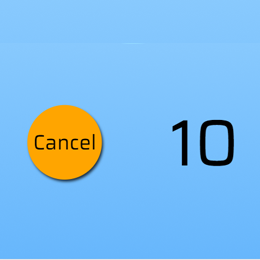

Statistics
Here is where you can find your progress while using the app. The first stat labelled is your average situps per minute based on all previous attempts. The next stats are your situps per minute for the past three attempts.
Home Screen Buttons
Here is the amount of time you want to track your situps. You can add or remove 30s by pressing the buttons. Once you are satisfied with the time then press start.
Timer Buttons
Here you can see your current progress in total situps so far. You can also press cancel to stop the timer and return to the home screen.